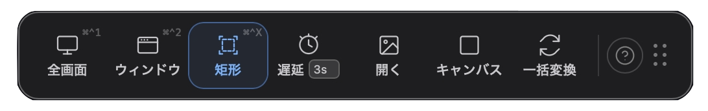
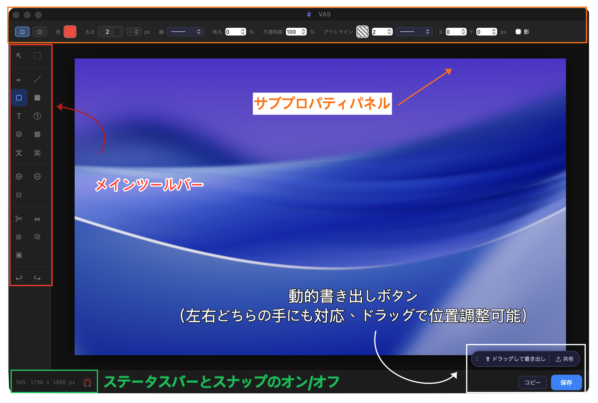

Welcome on Board
スクロールすると「入門 → 基本 → 応用」の順に進みます。
左側のメニューはいつでも表示されており、クリックで任意のセクションへ移動できます。
Ctrl＋F での検索も使えます。
スクロールすると「入門 → 基本 → 応用」の順に進みます。
セクションへジャンプするには、右上のブリーズライトをタップしてください。
入門
VAS を初めて開く
App Store からダウンロードしてインストール後、VAS を開くと、デスクトップに新しいフローティングツールバーが表示されます。デスクトップに固定でき、自由にドラッグして移動できます。

ツールバーのスペースが気になる場合——ブリーズライトモードはデフォルトで無効です。ツールバーの「ショートカットガイド」から手動で有効にしてください。

VAS は macOS のメニューバーにも常駐し、画面右上にボトルのアイコンとして表示されます。

右上のメニューバーのボトルを左クリックすると、デスクトップのツールバーを呼び出すか、完全に非表示にするかを切り替えられます。デスクトップをすっきり保ちたい方のために用意した機能です。
VAS はメニューバーで待機し続けます。
アクセス許可とプライバシー
VAS が初めてスクリーンショットを撮る際、macOS のスクリーン録画権限をリクエストします。これはすべてのスクリーンショットツールに対する macOS の規定です。許可しなかった場合は、「システム設定 → プライバシーとセキュリティ → スクリーン録画」で VAS にチェックを入れて再起動してください。
Tauri 専用Electron 版からアップグレードした場合、macOS は Tauri 版を新しいアプリとして認識するため、以前の画面収録の許可は引き継がれません。「システム設定 → プライバシーとセキュリティ → 画面収録」で古い VAS の許可を削除してから、Tauri 版でスクリーンショットを撮ると、macOS が再度許可を求めるプロンプトを表示します。
キャプチャした画像、OCR で認識したテキスト、QR コードの内容はすべてデバイス上でのみ処理されます——アップロード、分析、学習には使用しません。VAS にデータを受け取るサーバーはありません。
初めてのスクリーンショット
Dock の VAS アイコンをクリックするか、メニューバーのボトルをクリックしてください——VAS がどこにあっても、完全なツールバーが目の前に展開されます。
スクリーンショットモード（フルスクリーン ⌘^1、ウィンドウ ⌘^2、矩形 ⌘^X）を選択し、撮りたい画面をフレームに収めてください——VAS がすぐにエディターへ持ち込み、言葉だけでは伝えられないものを編み続けられます。
編集が終わったら、「ドラッグ出力」で任意のウィンドウやファイルへドラッグします。
3秒で完了。
基本
ブリーズライト × ワンクリック召喚
VAS を使っていないときも小さくデスクトップで待機させたい場合は、ブリーズライトモードをオンにしてください。
ツールバーが 120×6px の光の線に縮小されます。控えめで邪魔にならず、静かに待っています。
必要なときは：
- 全版本画像をドラッグして近づける——ツールバーがハエトリグサのように開いて、ドラッグした画像を受け取ります。放すと画像は直接エディターへ。別のものを編集中でも、それを収納してエディターを開きます。
- Tauri 専用画像をドラッグして書き出す——エディターがブラックホールのように収縮し、保存や受け渡しのために最大のデスクトップ空間と視界を確保します。ワンクリックでウィンドウ / ダイアログ / フォルダへ自由にドラッグ。放した瞬間、エディターが再び開いて続きへ。
- Tauri 専用URL をコピーして近づける——ブリーズライトが開き、トースト表示：「⟨URL⟩を検出——クリックしてスクリーンショット開始」。クリックするとウェブキャプチャが始まります。
- Tauri 専用ブラウザから画像をコピー——「画像を貼り付けますか？」のトーストが表示されます。確認すると直接エディターへ。
VAS をデスクトップの片隅に置いて場所を忘れてしまっても——ブリーズライトは本当に控えめなので——
Dock の VAS アイコンをクリックすれば、どこにあっても呼び出してツールバーとして展開されます。
キャプチャツールバー
デスクトップに常駐するフローティングツールバー
エディタ画面
スクリーンショット後に入る 2 番目のメインスペース。エディターは 4 つの操作エリアに分かれています：

24 のツール、ひとつクリックして操作方法と属性を確認。
選択
描画
注釈
プライバシー・遮蔽
キャンバス
レイアウト
その他
書き出し
編集が完了したら、VAS は 4 つの出口を用意しています：
- ドラッグ出力——エディターからデスクトップ・Finder・Slack・画像を受け付けるあらゆるアプリへ直接ドラッグ。保存もダイアログも不要。ドラッグするだけで転送完了。
- クリップボードにコピー——「コピー」ボタンを押すと画像がクリップボードに入り、別の場所で ⌘V で貼り付け。
- Tauri 専用ShareSheet——macOS ネイティブの共有パネル。AirDrop・メッセージ・メール・SNS へ送信。
- 保存——JPG／PNG／WebP／GIF／BMP／TIFF／PDF で保存できます。
応用
錬金の仕上げ
VAS はツールを小さく分解しています。一つ一つは単純——でも属性は重ねられる。
- テキスト × 塗り → マーカー
- テキスト × 透明 + 枠線 → 透明文字
- 罫線 × 破線 + 太さ → 校正の赤丸
- 線 × 直角 + 破線 → フロー線
- 図形 × グラデーション + 低不透明度 → フェードマスク
- 吹き出し × モザイク → コミック風ミーム
あなたが組み合わせたレシピは、あなただけの表現語彙になる。
→ あなたと VAS だけの Inside Language
OCR と QR コード
スクリーンショットは必ずしも編集のためだけではありません。
OCR · テキスト認識
認識したテキストはデフォルトでクリップボードに直接入ります。スクリーンショット後に ⌘V でどこにでも貼り付けられます。
Tauri 専用対応言語市場向けに、OCR はローカライズされたプライバシーマスキングを適用します——
例えば、現地の身分証番号・クレジットカード番号・電話番号のフォーマットを認識し、適切な処理を行います。
QR コード · スキャン
VAS は QR コードの画面内の占有率に応じて動作を決定します：
- 完全にフレーム内——意図的なスキャンと判断し、リンクへ直接移動。
- ゆるくフレーム（一部を含む）——「移動しますか？」と確認します。
- 完全に背景要素——何もせず、そのままエディターへ。
キーボードショートカット
エディター内蔵ショートカット一覧。4 つのグループに分かれています：
ツール切替
| 選取工具 | V |
| 框型選取 | M |
| 筆型工具 | P |
| 線條工具 | L |
| 矩形框 | R |
| 色塊 | B |
| 文字工具 | T |
| 編號標記 | N |
| 符號印章 | U |
| 馬賽克／模糊 | X |
| OCR 文字辨識 | G |
| 隱私遮蔽 | K |
| 裁切 | C |
| 調整大小 | S |
| 延伸畫布 | E |
| 疊入圖片 | O |
キャンバス操作
| 放大 | ⌘ = |
| 縮小 | ⌘ - |
| 適合視窗 | ⌘ 0 |
| 平移畫布 | Space ＋ 拖曳 |
| 切換磁吸對齊 | \ |
編集
| 撤銷 | ⌘ Z |
| 重做 | ⌘ ⇧ Z |
| 複製 | ⌘ C |
| 貼上 | ⌘ V |
| 複製最終影像 | ⌘ ⇧ C |
| 全選 | ⌘ A |
| 刪除選取物件 | Delete / ⌫ |
オブジェクト操作
| 15° 鎖定旋轉 | Shift ＋ 旋轉 |
| 等比縮放 | Shift ＋ 拖曳角落 |
| 跳過磁吸 | Alt ＋ 拖曳 |
| 微調 1 px | ← → ↑ ↓ |
| 微調 10 px | Shift ＋ ← → ↑ ↓ |
| 結束折線繪製 | Double-click |
カスタム設定
VAS は意図的に設定項目を少なくしています。優れたツールはデフォルトが正解だと考えるからです。調整できる項目：
- デスクトップツールバーの表示／非表示——メニューバーのボトルを左クリックで切り替え。
- ブリーズライトのオン／オフ——出荷時は無効。ツールバーの「ショートカットガイド」から手動で有効にできます。
- Tauri 専用ショートカットのカスタマイズ——有料版では全画面キャプチャ、ウィンドウキャプチャ、矩形キャプチャ、画像をペーストの 4 つのショートカットを好みの組み合わせに変更できます。
キー受付ルール
| F1 … F12 | F キーは修飾キー不要 |
| ⇧F5、⌘⌃A | 修飾キーを含む組み合わせ |
| A、1、X | 裸の英字や数字 |
| ⌘Q、⌘W、⌘H、⌘, | システム予約ショートカット |
| 單獨 ⌘ / ⌃ / ⌥ | 修飾キー単体 |